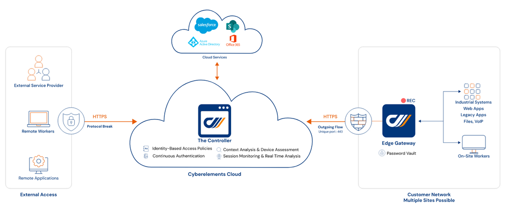

Étudiant en BTS SIO - Option SISR
Télécharger CVÉtudiant en deuxième année de BTS SIO option SISR, spécialisé dans la gestion des infrastructures, systèmes et réseaux.
J’ai toujours eu une appétence pour l’informatique et une curiosité pour les nouvelles technologies. C’est tout naturellement que je me suis tourné vers cette formation, après avoir obtenu mon BAC PRO SN - Mention Bien en 2022.
Entreprise : MDSFRANCE, Dourdan | Année : 2024
Entreprise : International Network Systems, Dublin | Année : 2024
Entreprise : W3tel, Les Ulis | Année : 2022 – 2023
Les sources utilisées pour la veille technologique :
Systancia est un fournisseur Européen de logiciels et de cybersécurité. Elle propose aux entreprises des solutions qui sécurise l’utilisateur dans son environnement de travail.
Systancia pense que, derrière tout poste de travail, il y a une personne qui mérite d’être en pleine maîtrise et en pleine confiance.
Dans mon cas j'ai choisi la plateforme SaaS Zero Trust unifiant le provisionnement des identités et la sécurité des accès et pour connecter en toute sécurité les collaborateurs à leurs applications et systèmes et garantit un contrôle total à l’organisation.
